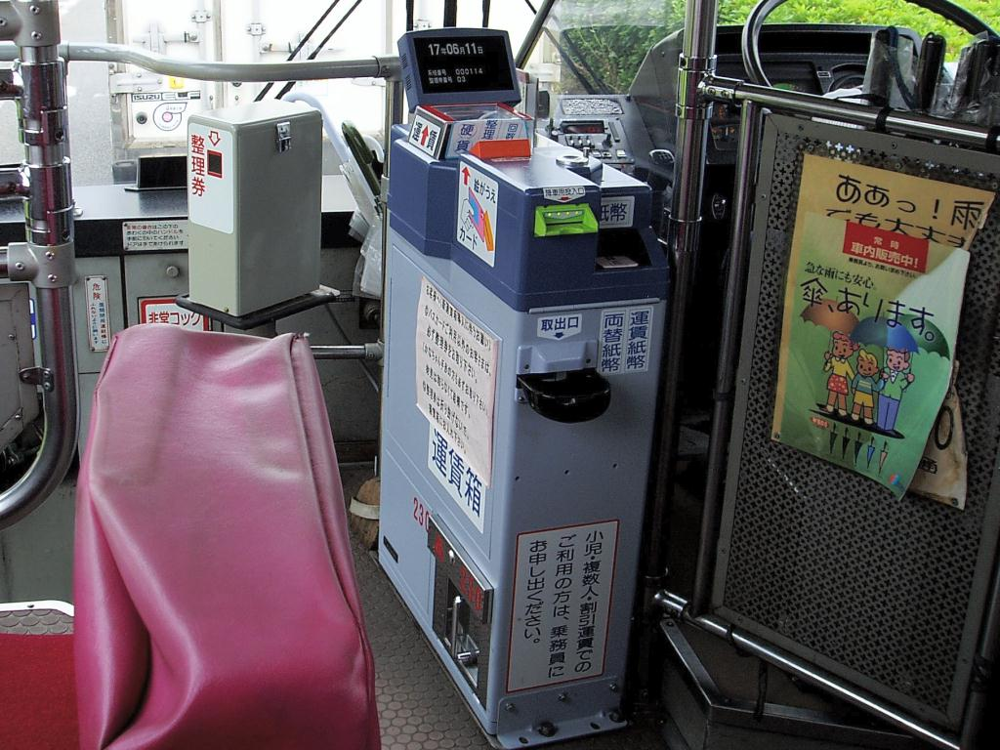
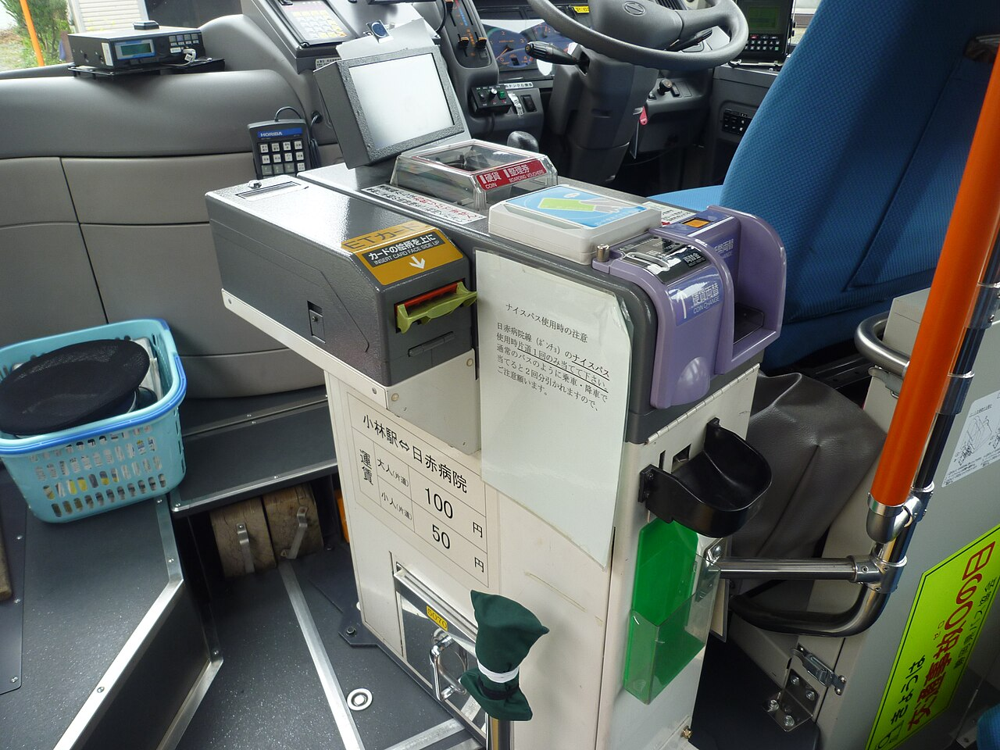
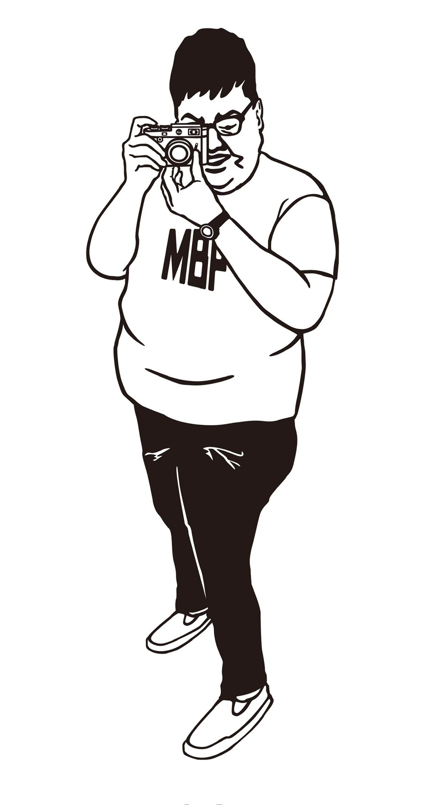

How to Ride Local Buses

路線バスの乗り方
1. Find your stop and direction / 停留所と行き先を確認する
At the stop, find your destination on the route map and read the timetable for the day you are traveling. Check the last bus back before you set off. When the bus arrives, compare its destination sign with the timetable. Unsure? Show the driver your stop name and ask, “Does this bus stop here?” 「このバスはここに停まりますか？」
停留所の路線図で降りたい停留所を探し、乗る日の時刻表と帰りの最終便を確認します。バスが来たら行き先表示を時刻表と照らし合わせます。迷ったら停留所名を運転手に見せて「このバスはここに停まりますか？」と聞きましょう。

2. Check the door and when to pay / 乗車口と支払うタイミングを確認する
Look for 入口 (entrance). On a pay-later bus (後払い), you often board through the middle or rear door. If paying cash, take a numbered ticket (整理券, seiriken) from the dispenser if one is issued. Keep it: the number identifies where you boarded. On a pay-first bus (先払い), pay or tap as you board, often at the front.
「入口」の表示を探します。後払いのバスは中央や後ろのドアから乗ることが多く、現金で払う場合は整理券が出たら取ります。番号は乗車地点を示すので、降りるまで持っていてください。先払いのバスは前から乗ることが多く、乗るときに現金で払うかカードをタッチします。
Check for your transit IC card’s logo. On a pay-later bus, if there is a card reader at the entrance, tap your card there to record where you boarded. For example, Hakone Tozan Bus accepts Suica and PASMO on its route buses, except regular sightseeing buses. Carry coins for routes that do not take your card.
交通系ICカードを使うなら、対応ロゴを確認します。後払いで入口に読み取り機があれば、カードをタッチして乗車地点を記録します。例えば箱根登山バスの路線バスではSuica・PASMOが使えますが、定期観光バスは対象外です。非対応の路線に備えて小銭も用意しましょう。
3. Request your stop and pay the fare / 降車を知らせ、運賃を支払う
When the display or announcement names your stop as the next one, press a stop button. Wait until the bus stops before walking to the exit (出口).
表示や放送で次が降りたい停留所だと分かったら、降車ボタンを押します。バスが止まってから出口へ移動します。
If the route charges a flat fare, pay the posted amount. If the fare depends on distance and you have a numbered ticket, find its number on the fare board at the front. Read the amount under that number when you reach your stop: it can change as you travel. Put the ticket and exact fare in the fare box beside the driver. If you need change, ask before dropping money in.
均一運賃なら掲示された額を支払います。距離で運賃が変わる路線で整理券を持っている場合は、降りる停留所で前方の運賃表を見て、整理券と同じ番号の下に表示された額を確認します。整理券とちょうどの金額を運転席横の運賃箱へ入れます。両替が必要なら、お金を入れる前に運転手に聞きましょう。
If you tapped in on a pay-later route, tap the same card at the exit reader instead of paying cash. If you paid on boarding, simply leave through the marked exit.
後払いで乗車時にICカードをタッチした場合は、現金を入れず、出口の読み取り機に同じカードをタッチします。先払いで支払い済みなら、出口の表示に従って降ります。
